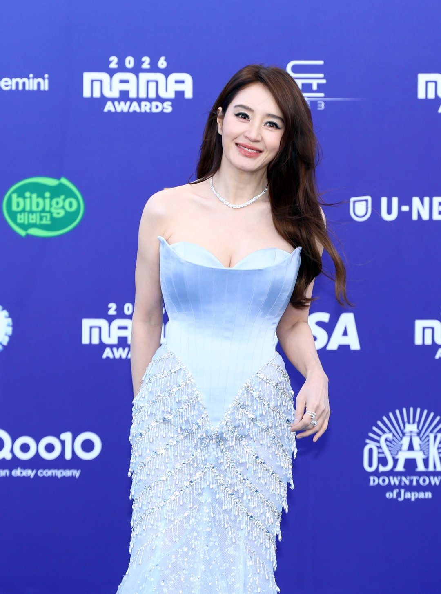
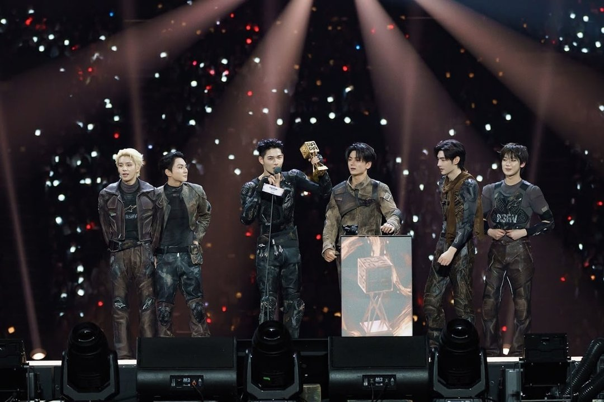
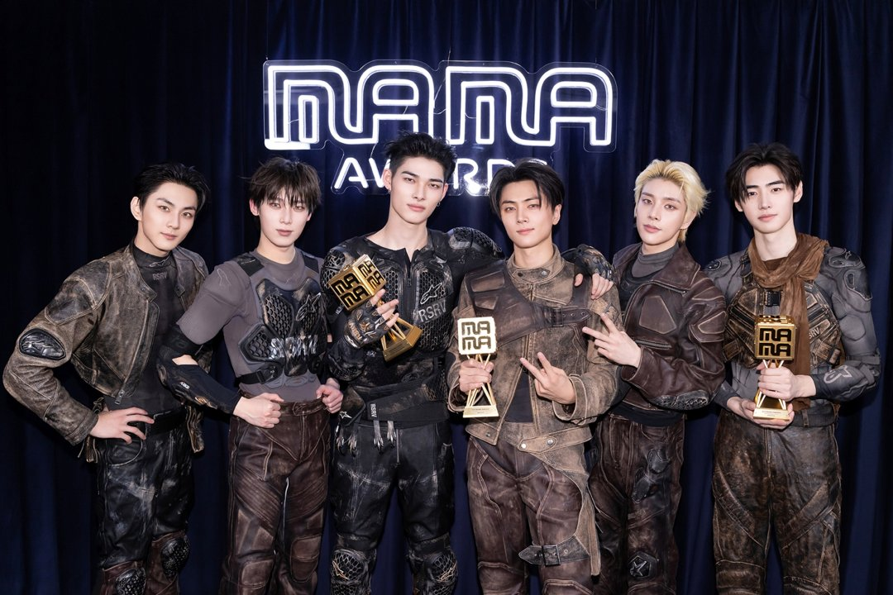
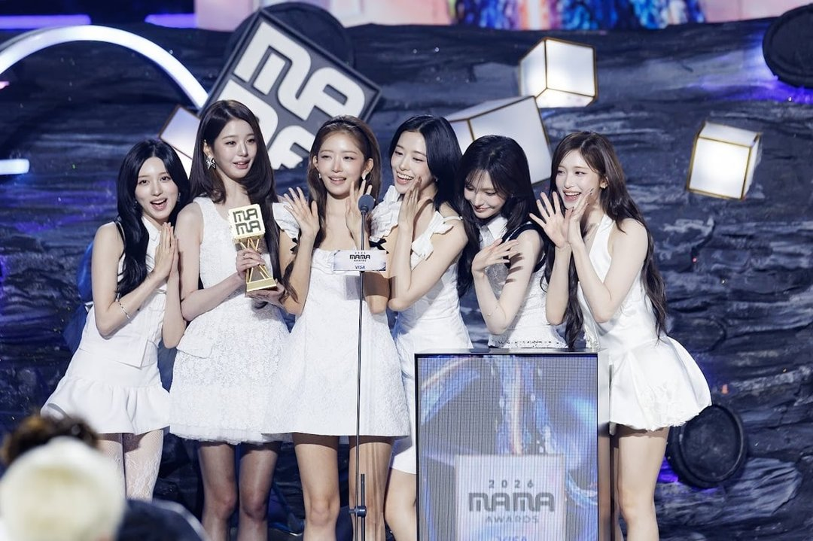
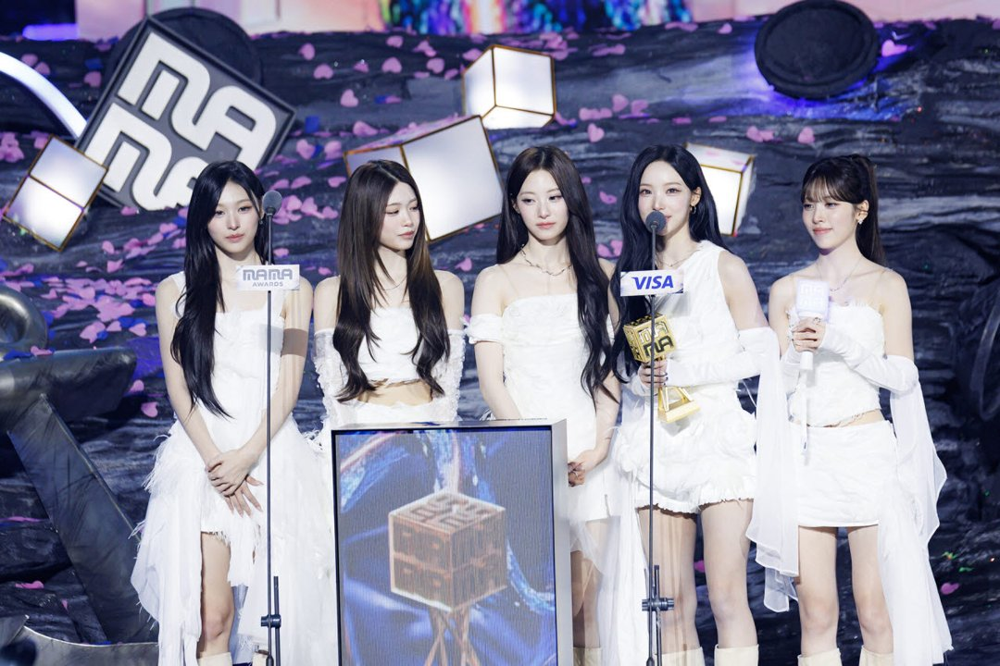

데뷔 20주년을 맞은 빅뱅이 '아기공룡 둘리'와 한 무대에 서요. 11월 21일 열리는 '2026 마마 어워즈' 둘째 날 이야기예요. 오늘 몇 시에 어디서 보면 되는지, 누가 나오는지, 어제 첫날 대상은 누가 받았는지 차례로 볼게요.
📷 사진 1 자리
▲ '2026 마마 어워즈' 공식 포스터 · 사진=Mnet 제공
▶ 영상 1 자리
오늘 몇 시, 어디서 보나
둘째 날 일정은 한국 시간 기준 낮 12시 30분 레드카펫으로 시작해요. 본 시상식은 오후 3시부터예요. 장소는 첫날과 같은 일본 교세라 돔 오사카이고, Mnet과 엠넷플러스(Mnet Plus)에서 생중계해요.
📷 사진 2 자리
▲ 첫날 레드카펫 · 사진=CJ ENM 제공
호스트는 배우 박보검이 맡았어요. 레드카펫 진행은 이대휘와 최미나수예요.
2일차 라인업 12팀
둘째 날 무대에 오르는 팀은 모두 12팀이에요.
가장 눈여겨볼 무대는 빅뱅이에요. 데뷔 20주년인 빅뱅이 애니메이션 '아기공룡 둘리'와 처음으로 협업 무대를 꾸며요. 올해 시상식 콘셉트가 다른 장르와 만나는 'A MUSIC INTERSTELLAR'라서, 이런 협업 무대가 곳곳에 들어가 있어요.
📷 사진 3 자리
▲ 첫날 시상식 무대 · 사진=CJ ENM 제공
첫날 대상은 방탄소년단과 엔하이픈
20일 열린 첫날에는 대상이 두 개 나왔어요. 방탄소년단이 '아티스트 오브 더 이어'를, 엔하이픈이 '팬스 초이스 오브 더 이어'를 받았어요. 두 팀 모두 3관왕이에요.
📷 사진 4 자리
▲ 트로피를 든 엔하이픈 · 사진=빌리프랩 제공
엔하이픈은 이 상을 2년 연속 받았어요. '팬스 초이스 남자'와 '페이보릿 엠카운트다운 스테이지'까지 더해 트로피가 세 개예요. 리더 정원은 스스로를 믿지 못하던 시기에도 팬덤 엔진이 믿어 줬기에 이 자리에 섰다며 울먹였어요.
▶ 영상 2 자리
첫날 다른 수상자
첫날은 팬 투표로 뽑는 '팬스 초이스 톱10'과 신인상 같은 가수 부문 시상이 이어졌어요.
📷 사진 5 자리
▲ 첫날 수상 소감 무대 · 사진=CJ ENM 제공
리센느 원이는 2년 전 헬스장 러닝머신 위에서 마마 무대를 보며 꼭 나가고 싶다고 말했던 꿈을 이뤘다고 소감을 밝혔어요.
📷 사진 6 자리
▲ '베스트 오브 넥스트'를 받은 리센느 · 사진=Mnet 제공
▶ 영상 3 자리
첫날 무대는 방송 당일 Mnet K-POP 유튜브 채널에 곡마다 올라왔어요. 생중계를 놓쳐도 빅뱅과 둘리 협업처럼 보고 싶은 무대만 골라 볼 수 있다는 뜻이에요. 오늘 오후 3시를 못 맞추는 분은 저녁에 그 채널부터 확인해 보세요.
'2026 마마 어워즈' 2일차는 21일 낮 12시 30분 레드카펫, 오후 3시 본 시상식으로 열리고 Mnet과 엠넷플러스에서 생중계돼요.




